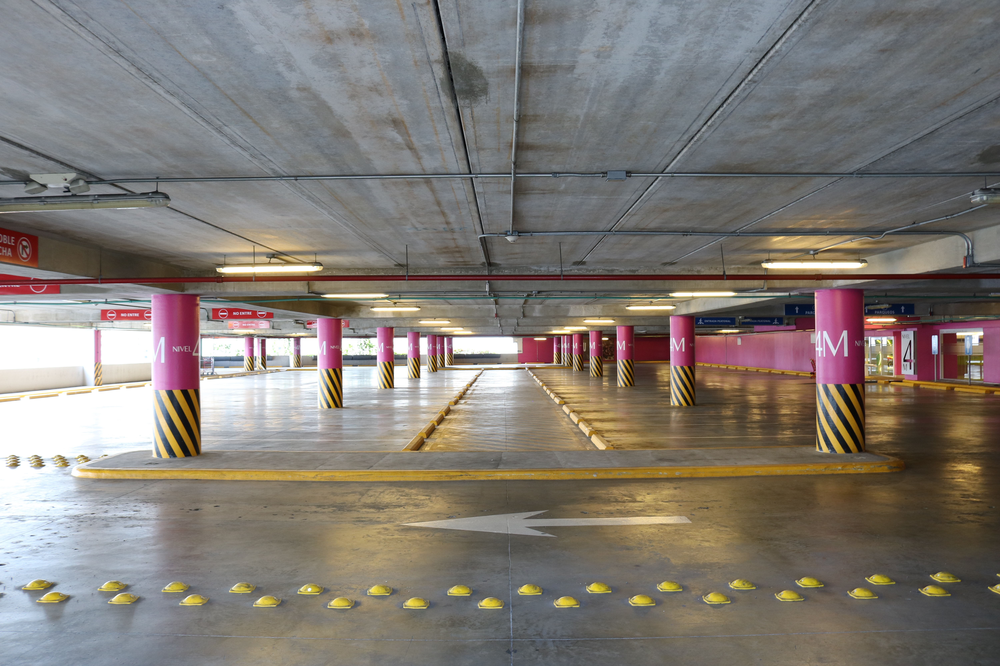

LAWN TENNIS
Tennis helps you deal with physical, mental, social and emotional challenges, which increases your capacity to deal with stress. Tennis is a sport that is based on evaluating angles, geometry and physics to get the best result, which translates into better problem-solving off the court.

Tennis is a game played with a felt-shrouded elastic ball, a tennis racket, and a court. Since 1998, each September 23 has been designated “Tennis Day”. Tennis’ proper name is “grass tennis”. In the first place, from the get-go in the eleventh century, major parts in France played a game like this with their hands. It was classified as “Jeu de Paume”. In the fifteenth century, the players played with rackets. Presently it is classified as “tennis”.
PARKING LOT
Parking is one of the key component of transportation program all over the world. With the increasing percentage of vehicle ownership in recent times, parking has become a conflicting and confusing situation for lot of people. Most often people cannot find suitable or adequate space to park their vehicles and end up encroaching the roads. The average automobile is in motion only for a small percentage of time. During the remaining times it is stationary, parked somewhere along the street or off the street on a parking lot or in a special parking facility.
SWIMMING POOL
A swimming pool is a tank or large basin that is filled with water and intended for recreational or competitive swimming or diving. Pools are also used for other bathing activities, such as playing, wading, water exercising, floating on inner tubes, or cooling off on hot days. Various methods are used to keep algae, germs, and other bad things out of the pool. The chemical chlorine kills germs and algae. Sometimes sea water is also used for this. The filtration system is also used for this. Pump and Filter are two main components of a swimming pool filtration system.

PARK
A park is a place where there are many trees and plants and also swings for children. It is a place for enjoyment where children and people can go to walk, run, play or sit. ... Some parks are for adults and they have fitness equipment, walking path and benches for old people.

Give your review..
Thanks for visiting